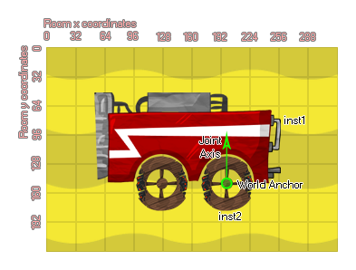

physics_joint_wheel_create(inst1, inst2, anchor_x, anchor_y, axis_x, axis_y, enableMotor, max_motor_torque, motor_speed, freq_hz, damping_ratio, col)
| Argumento | Descripción |
|---|---|
| inst1 | La primera instancia para conectarse con la articulación |
| inst2 | La segunda instancia para conectarse con la articulación |
| anchor_x | La coordenada x donde está anclada la articulación, dentro del mundo del juego |
| anchor_y | La coordenada y donde está anclada la articulación, dentro del mundo del juego |
| axis_x | El componente x del vector del eje de la rueda |
| axis_y | El componente y del vector del eje de la rueda |
| enableMotor | Si el motor debe estar activo (verdadero) o no (falso) |
| max_motor_torque | Establece el par máximo del motor utilizado para alcanzar la velocidad deseada del motor (en Newtons por metro) |
| motor_speed | Esta es la velocidad a la que el motor debería girar |
| freq_hz | Esta es la frecuencia de oscilación para la articulación, en hertz |
| damping_ratio | Esta relación de amortiguación para la junta |
| col | Si las dos instancias pueden colisionar (verdadero) o no (falso) |
Devoluciones: índice de la articulación
Una articulación de rueda simplemente combina un pistón y una junta revolucionaria, como una rueda montada en el amortiguador de un automóvil. Usted especifica el punto de anclaje para el pozo común ya que las dos instancias habilitadas para física se unen, y la primera instancia actuará como el "cuerpo" para la unión, mientras que la segunda será la "rueda", y se le permitirá moverse libremente alrededor el eje de articulación. También puede establecer un vector de eje, que es la línea imaginaria a lo largo de la cual la unión actuará como un "resorte" que permite que la rueda rebote hacia arriba y hacia abajo a medida que encuentra obstáculos (muy parecido a la unión del pistón). La siguiente imagen ilustra esto:

Si elige activar un motor, la segunda instancia girará alrededor de la posición de anclaje, y puede establecer el par motor máximo utilizado para lograr la velocidad deseada del motor (N / m), así como la velocidad a la que el motor debe girar. Dado que la articulación de la rueda también tiene un eje a lo largo del cual se puede mover, puede establecer la frecuencia de oscilación (en Hz) y la relación de amortiguación de la articulación; puede que necesite jugar con estos valores para ajustarlos y se recomienda que comiences con valores más pequeños e incrementándolos hasta que obtengas el efecto que deseas.
Como con todas las uniones, si configura el valor "col" para true entonces las dos instancias pueden interactuar y colisionar entre sí, pero solo si tienen eventos de colisión, sin embargo, si está configurado para false, no colisionarán sin importar qué.
var mainFixture = physics_fixture_create();
physics_fixture_set_box_shape(mainFixture, 128, 32);
var wheelFixture = physics_fixture_create();
physics_fixture_set_circle_shape(wheelFixture, 32);
var o_id = instance_create_layer(x+25, y + 100, "Instances",
obj_Wheel);
physics_fixture_bind(mainFixture, id);
physics_fixture_bind(wheelFixture, o_id);
physics_joint_wheel_create(id, o_id, o_id.x, o_id.y, 0, 1, true,
10, 1, 15, 6, false);
physics_fixture_delete(mainFixture);
physics_fixture_delete(wheelFixture);
El código anterior crea y define dos nuevos accesorios. Estos se enlazan a la instancia de llamada y a una nueva instancia que se crea antes de que se aplique una unión de rueda para conectarlos, después de lo cual los dispositivos se borran de la memoria.